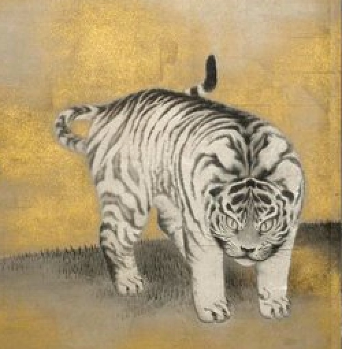

📙 円山応挙の遊虎図¶
質問者: Shigeru Morifuku
回答者: Claude Opus 5.5
回答日: 2026/10/9
免責: 回答者は AI であり、間違えることがあります。

🟩 Q: 円山応挙は虎の実物をみたことあるの？¶
いいえ、円山応挙（1733〜1795）は生きた虎を見たことはなかったと考えられています。江戸時代の日本には虎がおらず、生きた虎が見世物として来たのは幕末以降です。
そのため応挙は、主に次のものを手がかりに虎を描きました。
虎の毛皮：輸入された毛皮を観察し、縞模様や毛並みの質感を写し取った
中国絵画の虎図：先行する虎の絵の構図や姿を参考にした
猫：体の動きや顔つきは身近な猫を観察して補った
写生を重んじた応挙らしく、毛の一本一本まで細かく描き込まれていますが、顔立ちや体つきはどこか猫っぽく、目も猫のような表情に見えます。金刀比羅宮（香川）の「遊虎図」などがよく知られており、どこか可愛らしい虎として今も人気があります。
本物を見られない中で、手に入る資料と観察をできるだけ組み合わせて描いた結果が、あの独特の虎になったと言えます。
🟩 Q: 大英博物館の浮世絵はどのように入手されたの？¶
大英博物館の浮世絵・日本美術コレクションは、一度にまとめて買われたものではなく、250年以上かけて寄贈・購入・遺贈が積み重なってできたものです。主な流れは次のとおりです。
1. 創設期（18世紀）：スローン・コレクション
博物館の母体となったハンス・スローン卿の収集品に、出島に来ていたドイツ人医師ケンペルが持ち帰った日本の資料が含まれていました。これが日本関係資料の始まりです。
2. 明治期のジャポニスムと大型購入
ウィリアム・アンダーソン（日本で医学を教えた英国人医師）の日本・中国絵画コレクションを1881年に博物館が購入。ここに肉筆浮世絵も多く含まれます。
作家アーサー・モリソンの日本絵画コレクションを1913年に入手（篤志家の資金援助による購入）。
当時は明治維新後の混乱で、日本国内では浮世絵の評価が低く、大量に海外へ流出していました。欧州のジャポニスム熱の中で、収集家やディーラーを通じて英国に渡ったものが博物館に入っていきました。
3. 20世紀以降の寄贈・遺贈
キュレーターのローレンス・ビニヨンらが体系的な収集と研究を進め、個人収集家からの寄贈・遺贈も続いて、版画の点数が大きく増えました。
4. 近年の購入
現在も購入は続いており、例えば2020年前後には、北斎の未刊の絵本のための版下絵（「万物絵本大全図」）約100点を、美術支援団体アート・ファンドの援助を受けて購入しています。
つまり、明治期の海外流出 → 英国の収集家の手に → 博物館が購入・寄贈で取得、というのが大きな流れです。個々の作品の来歴は、大英博物館のオンライン・コレクション検索で作品ごとに「入手経緯（Acquisition）」として確認できます。
🟩 Q: 漫画の源流は浮世絵？¶
「浮世絵が源流の一つ」とは言えますが、浮世絵だけが源流というのは単純化しすぎ、というのが一般的な見方です。現代の漫画には、いくつもの流れが合流しています。
日本の伝統の側
絵巻物（鳥獣戯画など、12世紀頃〜）：絵を連続させて時間や物語を進める表現。擬人化やユーモアもすでにある
草双紙・黄表紙（江戸時代）：絵の中に文字を書き込み、ページをめくって物語を読む大衆向け絵本。形式としては浮世絵の一枚摺りより、こちらのほうが漫画に近い
浮世絵・北斎漫画：「漫画」という言葉が広まるきっかけは『北斎漫画』ですが、中身はコマ割りの物語ではなく、人物や動物を描いた絵手本（スケッチ集）です。誇張表現やデフォルメ、大胆な構図は後の漫画に通じます
鳥羽絵・戯画：手足の長い人物を滑稽に描く江戸の戯画
西洋からの影響
幕末〜明治に、英国人ワーグマンの風刺雑誌『ジャパン・パンチ』が登場し、「ポンチ絵」と呼ばれる風刺画が流行
明治〜大正には北沢楽天や岡本一平が、欧米の新聞漫画（コマ漫画）の形式を取り入れて現代的な漫画を確立
戦後、手塚治虫がディズニーアニメや映画の手法（クローズアップ、カメラワーク的なコマ運び）を取り入れ、ストーリー漫画を大きく発展させた
まとめると、絵で物語を語る伝統（絵巻・草双紙）、デフォルメや誇張の感覚（浮世絵・戯画）、そして西洋のコマ漫画と映画的手法が合わさってできたのが現代の漫画です。浮世絵は「絵の感覚」の面で大きな影響源の一つ、と考えるのが妥当です。